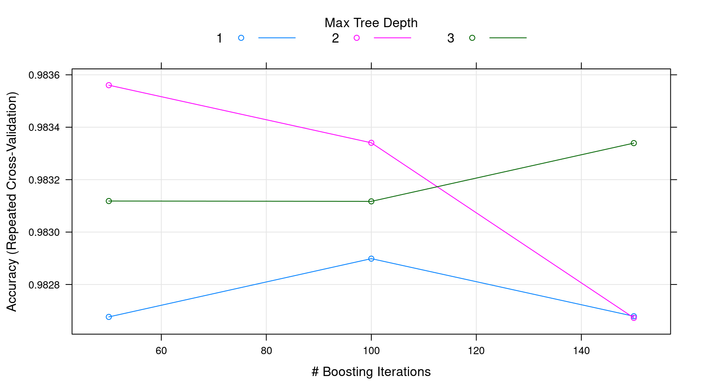

Gradient Boosting
## required packages
library(caret)
library(gbm)
## Training and Testing Data
hof.train = read.csv("data/HOF_tr.csv");
hof.test = read.csv("data/HOF_te.csv")
hof = rbind(hof.train, hof.test)
hof$HOF = as.factor(as.numeric(hof$HOF) - 1)
## create a training and testing set by randomly sampling from all of the data
## using the same set as in the random forest example
set.seed(1002)
x = sample(nrow(hof), replace = FALSE)
## remove unwanted columns
hof = hof[, -c(2:4)]
## lets train the model on about 90% of the data
train = hof[x[1:900], ]
test = hof[-x[1:900], ]
head(train) HOF POS ASG G AB R H DB TP HR RBI SB CS BB SO AVG
453 0 1B 0.44 2071 7030 1105 1921 295 48 370 1274 63 31 943 1137 273
803 0 SS 0.00 568 1104 142 260 43 10 37 109 7 5 94 220 236
621 0 C 0.00 476 1125 89 267 41 5 18 108 1 0 43 159 237
230 0 OF 0.12 1912 6787 926 1884 334 69 164 824 312 134 468 1266 278
379 0 OF 0.17 1457 4843 737 1399 212 60 142 661 89 68 644 591 289
720 0 OF 0.09 1221 3895 540 1020 175 37 112 485 45 30 351 574 262
SLG OBP
453 487 359
803 393 304
621 331 268
230 420 325
379 445 371
720 412 323summary(train) HOF POS ASG G AB
0:861 1B: 96 Min. :0.0000 Min. : 140.0 Min. : 252
1: 39 2B:105 1st Qu.:0.0000 1st Qu.: 937.5 1st Qu.: 2628
3B:100 Median :0.0000 Median :1286.0 Median : 4034
C :158 Mean :0.1028 Mean :1338.3 Mean : 4335
OF:331 3rd Qu.:0.1500 3rd Qu.:1666.2 3rd Qu.: 5607
SS:110 Max. :0.9500 Max. :3308.0 Max. :12364
R H DB TP
Min. : 20.0 Min. : 48.0 Min. : 6.0 Min. : 0.00
1st Qu.: 308.5 1st Qu.: 660.2 1st Qu.:110.8 1st Qu.: 12.00
Median : 511.5 Median :1061.0 Median :180.0 Median : 24.00
Mean : 574.8 Mean :1159.5 Mean :199.4 Mean : 30.44
3rd Qu.: 756.0 3rd Qu.:1531.2 3rd Qu.:264.0 3rd Qu.: 41.00
Max. :2295.0 Max. :3771.0 Max. :725.0 Max. :177.00
HR RBI SB CS
Min. : 0.00 Min. : 21.0 Min. : 0.00 Min. : 0.00
1st Qu.: 37.75 1st Qu.: 280.5 1st Qu.: 15.00 1st Qu.: 15.00
Median : 81.00 Median : 447.0 Median : 40.50 Median : 30.00
Mean :115.15 Mean : 540.9 Mean : 84.33 Mean : 41.81
3rd Qu.:155.00 3rd Qu.: 708.0 3rd Qu.: 101.25 3rd Qu.: 57.00
Max. :755.00 Max. :2297.0 Max. :1406.00 Max. :335.00
BB SO AVG SLG
Min. : 17.0 Min. : 35.0 Min. :161.0 Min. :222.0
1st Qu.: 226.8 1st Qu.: 375.5 1st Qu.:248.0 1st Qu.:351.0
Median : 363.0 Median : 569.0 Median :262.0 Median :392.5
Mean : 435.3 Mean : 643.5 Mean :261.3 Mean :393.2
3rd Qu.: 567.0 3rd Qu.: 841.2 3rd Qu.:274.0 3rd Qu.:432.0
Max. :2190.0 Max. :2597.0 Max. :338.0 Max. :565.0
OBP
Min. :203.0
1st Qu.:310.0
Median :327.0
Mean :328.2
3rd Qu.:347.0
Max. :417.0 ## build model
fitControl = trainControl(method = "repeatedCV", number = 5, repeats = 5)
mdl = train(HOF ~ ., data = train, method = "gbm", trControl = fitControl,
verbose = FALSE)
## Model Summary
mdl; plot(mdl)Stochastic Gradient Boosting
900 samples
17 predictor
2 classes: '0', '1'
No pre-processing
Resampling: Cross-Validated (5 fold, repeated 5 times)
Summary of sample sizes: 720, 720, 720, 719, 721, 720, ...
Resampling results across tuning parameters:
interaction.depth n.trees Accuracy Kappa
1 50 0.9842196 0.7910195
1 100 0.9839986 0.7934159
1 150 0.9835517 0.7899395
2 50 0.9859986 0.8179582
2 100 0.9846653 0.8038399
2 150 0.9840035 0.7949731
3 50 0.9833307 0.7767886
3 100 0.9824443 0.7725392
3 150 0.9831146 0.7844066
Tuning parameter 'shrinkage' was held constant at a value of 0.1
Tuning parameter 'n.minobsinnode' was held constant at a value of 10
Accuracy was used to select the optimal model using the largest value.
The final values used for the model were n.trees = 50, interaction.depth
= 2, shrinkage = 0.1 and n.minobsinnode = 10.
x = predict(mdl, test, type = "prob")
## compile results
results = data.frame(
Actual = test$HOF,
Prob.N = x[, 1],
Prob.Y = x[, 2]
)
## code 0/1 back to N/Y
results$Actual = as.character(results$Actual)
results$Actual[results$Actual == '0'] = 'N'
results$Actual[results$Actual == '1'] = 'Y'
results$Actual = factor(results$Actual)
## if probability of HOF is > .5 then score a Y
results$Prediction = "N"
results$Prediction[results$Prob.Y >= .5] = "Y"
results$Prediction = factor(results$Prediction)
## accuracy calculation from the random forest example
metric = function(confusion) {
sensitivity = confusion[4] / (confusion[2] + confusion[4])
specificity = confusion[1] / (confusion[1] + confusion[3])
score = (sensitivity + (3 * specificity)) / 4
return(score)
}
## confusion matrix and accuracy score
(confusion = table(Prediction = results$Prediction, Actual = results$Actual)) Actual
Prediction N Y
N 106 2
Y 0 8## accuracy score for training set
metric(confusion)[1] 0.9861111## look at the incorrect responses and see if we can lower the threshold with creating
## false positives
summary(results); subset(results, Actual != Prediction) Actual Prob.N Prob.Y Prediction
N:106 Min. :0.001712 Min. :0.001282 N:108
Y: 10 1st Qu.:0.998683 1st Qu.:0.001317 Y: 8
Median :0.998683 Median :0.001317
Mean :0.935894 Mean :0.064106
3rd Qu.:0.998683 3rd Qu.:0.001317
Max. :0.998718 Max. :0.998288 Actual Prob.N Prob.Y Prediction
1 Y 0.9691392 0.03086077 N
78 Y 0.7711650 0.22883501 Nmin.pred = min(subset(results, Actual != Prediction, "Prob.Y"))
## it looks like there is no danger of lowering the threshold
results$Prediction.new = "N"
results$Prediction.new[results$Prob.Y >= min.pred] = "Y"
## confusion matrix and accuracy score
(confusion = table(Prediction = results$Prediction.new, Actual = results$Actual)) Actual
Prediction N Y
N 102 0
Y 4 10## accuracy score for training set
metric(confusion)[1] 0.9285714## there are fewer incorrect answers, but the penalty for false positives are greater
## than false negatives so the accuracy score is actually lower